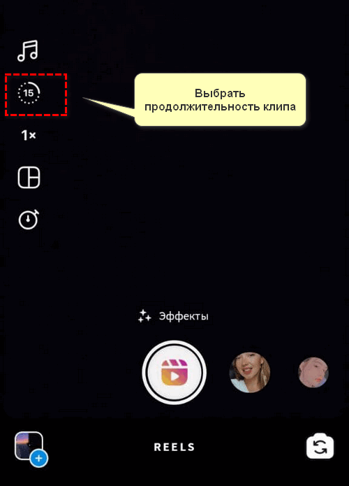
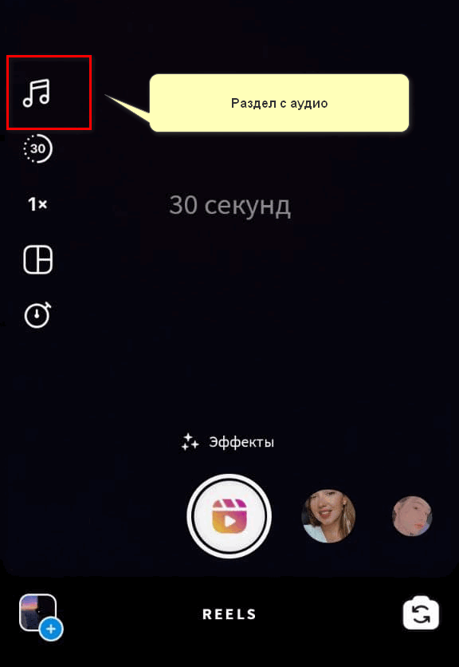
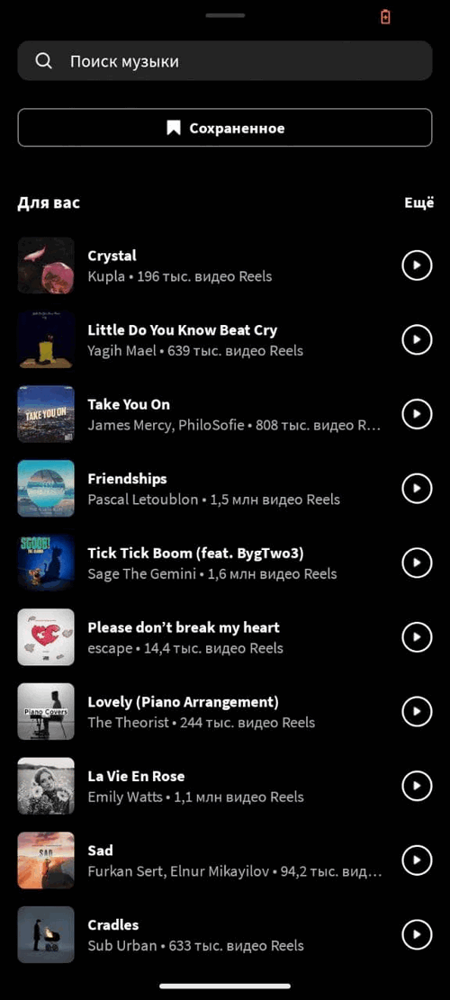
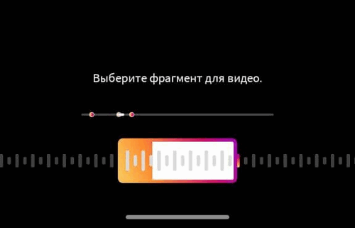

Сколько длится Reels в Инстаграме: максимальная длинна 60 секунд

Длина Reels в Инстаграме* указана в функциональном меню при записи клипа. Пользователь может сменить продолжительность с 15 секунд до 60 секунд.
Максимальная продолжительность видео в Рилс
Максимальная длина Рилс в Инстаграме* установлена самим приложением и изначально не превышала более 15 секунд. С введением обновлений появились новые форматы:
- 15 секунд. Короткие клипы, где можно уместить всего несколько надписей или припев песни;
- 30 секунд. Средняя продолжительность;
- 60 секунд. Полнометражный клип для Reels в Инстаграме*.
В зависимости от количества контента, пользователь может выбрать один из вариантов, воспользовавшись боковым меню. Но недостаток коротких видео в том, что необходимо правильно подстроить музыкальную композицию. Звуки доступны в разделе: «Каталог» или их можно создать самостоятельно, воспользовавшись озвучкой.
Если показывает только один вариант в Инстаграме*
Продолжительность Рилс в Инстаграме* можно посмотреть через соответствующий раздел, выбрав сбоку вариант. Как посмотреть, какая максимальная длина клипа доступна:
- Зайти в Инстаграм* – нажать сверху по кнопке: «Добавить».
- Выбрать вариант: «Reels» - сверху кнопка: «Запись» в виде фотоаппарата.

- Сбоку в меню нажать по значку с надписью «15» - выбрать нужную продолжительность.

- нужно обновить приложение с помощью Play Market;
- переустановить Instagram*;
- проверить включенные сервисы анонимного доступа.
- Зайти в Play Market – вписать в поиске Instagram*.
- Если рядом с приложением появилась кнопка «Обновить» - значит необходимо установить новую версию.
Как использовать музыку при коротких видео
Выложить в Reels длинное видео проще, чем воспользоваться короткой продолжительностью. Это связано с тем, что большинство аудиодорожек рассчитаны для клипов до одной минуты. Но с помощью редактора аудио можно подобрать момент, который подойдет для записи только в 30 секунд для Reels или 15.
Как изменить момент аудио для короткого клипа:
- Перейти к записи Reels – в боковом меню выбрать: «Аудиодорожка».

- Появится меню, где можно выделить нужный фрагмент.

- Указать часть и запустить запись клипа.

Автор может выбирать форматы отображения аудио: бегущая строка или музыка будет вовсе не видна на экране, а информация о ней появится в описании.
Как выложить Reels 30 и 60 секунд
По времени можно добавить Рилс до 30 и 60 секунд. Чтобы их записать, достаточно переключиться на выбранный режим и сделать видео. В верхней части окна записи появится линия, которая заполняется в ходе создания клипа. Также, автор может снимать видео отдельными частями, останавливая и начиная вновь.
Как записать длинное Reels:
- Перейти к записи клипа – выбрать сбоку продолжительность.
- Выбрать аудиодорожку – подобрать маску.
- Записать клип.
Или, если в Галерее пользователя находится видео, которым бы он хотел поделиться с подписчиками – он может добавить его в Рилс. Но если запись превышает одну минуту, то Инстаграм* предложит обрезать клип или опубликовать его в IGTV.